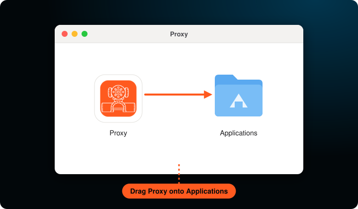
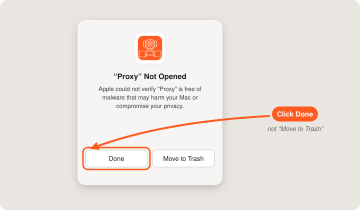
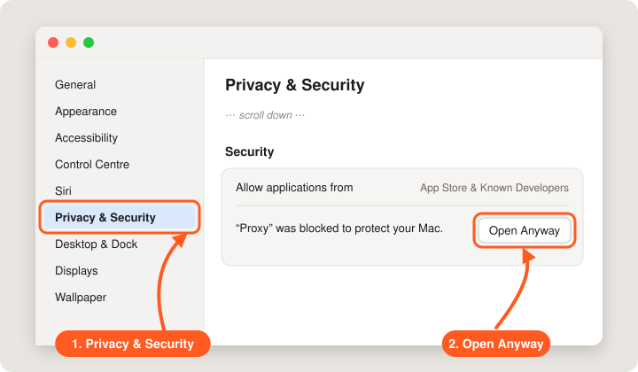
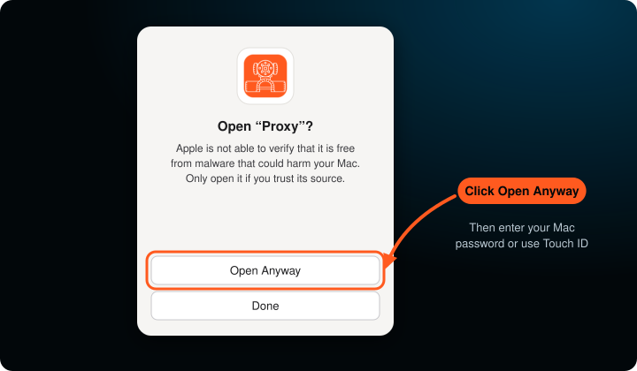
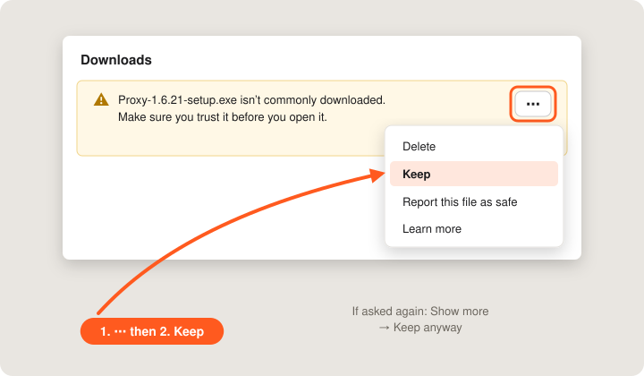
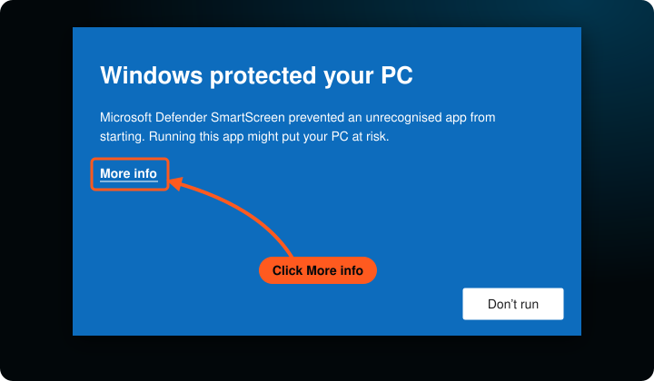
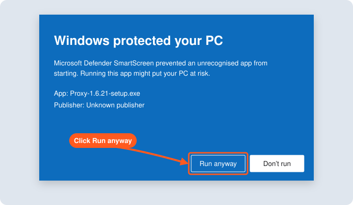

Installing on a Mac
- Open the downloaded Proxy file. In the window that opens, drag the Proxy icon onto Applications.

- Open Applications and double-click Proxy. The first time, your Mac says “Proxy” Not Opened. Click Done, not Move to Trash.

- Open System Settings (the grey gear in the Dock, or Apple menu → System Settings). Click Privacy & Security, scroll down to Security and click Open Anyway next to “Proxy” was blocked.

- Click Open Anyway once more, then enter your Mac password or use Touch ID. Proxy opens. You only need to do this once.

Installing on Windows
- If your browser says the file “isn’t commonly downloaded”, click the ⋯ next to it, then Keep. If it asks again, click Show more, then Keep anyway. (This picture is Microsoft Edge; Chrome shows a similar Keep button.)

- Open the downloaded Proxy setup file. If Windows shows “Windows protected your PC”, click More info.

- Click Run anyway. Proxy installs itself, puts a shortcut on your desktop and opens. You only need to do this once.

The pictures are drawings of what you will see; the exact look can differ a little with your version of macOS, Windows or your browser.
These warnings appear because Proxy is a new app from an independent developer. Every update is signed, and Proxy checks the signature before installing it. After the first install, Proxy updates itself from inside the app.